USSR · Tier IV
All nations and tiers · EU v20410 → RU v14600ru · 3 November 2026
A-32 · Tier IV
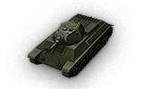
Armor & health
Health EU 550  RU 630
RU 630
Track repair time (s) EU 8.02 RU 5
BT-7 · Tier IV
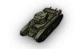
Penetration (mm)
EU  AP 98 /
AP 98 /  APCR 133 /
APCR 133 /  HE 19 → RU
HE 19 → RU  AP 78 /
AP 78 /  APCR 112 /
APCR 112 /  HE 19
HE 19
Damage (HP)
EU  AP 45 /
AP 45 /  APCR 45 /
APCR 45 /  HE 60 → RU
HE 60 → RU  AP 40 /
AP 40 /  APCR 40 /
APCR 40 /  HE 50
HE 50
Firepower
DPM (HP/min) EU 1 656.53  RU 1 390.67
RU 1 390.67
Rate of fire (rounds/min) EU 36.81 RU 34.77
Reload time (s) EU 1.63 RU 1.73
Potential damage EU 9 000 RU 8 000
Gun handling
Aim time (s) EU 1.44 RU 1.63
Dispersion (m/100 m) EU 0.34 RU 0.35
Dispersion · damaged EU 0.67 RU 0.69
Dispersion · moving EU 0.14 RU 0.16
Dispersion · tank traverse EU 0.14 RU 0.16
Dispersion · firing EU 2 RU 1.50
Mobility
Forward speed on soft terrain (km/h) EU 63.60 RU 58.68
Engine power (hp) EU 550 RU 507.49
Power/weight (hp/t) EU 38.43 RU 35.46
Tank traverse on hard terrain (°/s) EU 57.71 RU 51.38
Tank traverse on medium terrain (°/s) EU 46.17 RU 41.10
Tank traverse on soft terrain (°/s) EU 20.07 RU 17.87
Armor & health
Track repair time (s) EU 8.02 RU 5
IT-3 · Tier IV
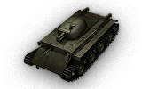
Penetration (mm)
EU  AP 68 /
AP 68 /  HEAT 100 /
HEAT 100 /  HE 38 → RU
HE 38 → RU  AP 86 /
AP 86 /  HEAT 102 /
HEAT 102 /  HE 58
HE 58
Damage (HP)
EU  AP 110 /
AP 110 /  HEAT 110 /
HEAT 110 /  HE 164 → RU
HE 164 → RU  AP 110 /
AP 110 /  HEAT 110 /
HEAT 110 /  HE 210
HE 210
Firepower
DPM (HP/min) EU 1 376.76 RU 1 529.73
Rate of fire (rounds/min) EU 12.52 RU 13.91
Reload time (s) EU 4.79 RU 4.31
Shell velocity (m/s) EU 612 RU 742
Ammo capacity EU 75 RU 60
Potential damage EU 8 250 RU 6 600
Gun handling
Aim time (s) EU 2.30 RU 2.49
Mobility
Forward speed (km/h) EU 50 RU 60
Forward speed on hard terrain (km/h) EU 50 RU 60
Forward speed on medium terrain (km/h) EU 50 RU 60
Forward speed on soft terrain (km/h) EU 42.70 RU 59.26
Reverse speed (km/h) EU 15 RU 20
Engine power (hp) EU 370 RU 528.64
Weight (kg) EU 17 000 → RU 17 500
Power/weight (hp/t) EU 21.76 RU 30.21
Turret traverse (°/s) EU 35.46 RU 39.63
Armor & health
Health EU 560 RU 630
Health · ammo rack EU 130 RU 150
Track repair time (s) EU 12.03 RU 5
Miscellaneous
Stationary camo EU 13.57 RU 13.91
Stationary camo · after firing EU 3.53 RU 3.62
Moving camo EU 10.15 RU 10.43
Moving camo · after firing EU 2.64 RU 2.71
SU-5 · Tier IV
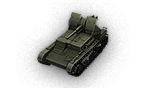
Penetration (mm)
EU  HE 35 /
HE 35 /  HE 44 /
HE 44 /  AP 100 → RU
AP 100 → RU  HE 44 /
HE 44 /  AP 100
AP 100
Damage (HP)
EU  HE 350 /
HE 350 /  HE 450 /
HE 450 /  AP 300 → RU
AP 300 → RU  HE 450 /
HE 450 /  AP 300
AP 300
Firepower
DPM (HP/min) EU 1 288.41 RU 1 656.53
Explosion radius EU 6.20 RU 4.60
Stun duration · maximum (s) EU 6.50 → RU —
Stun duration · minimum (s) EU 3.90 → RU —
Shell velocity (m/s) EU 285 RU 305
Max range (m) EU 601.67 RU 689.07
Potential damage EU 6 300 RU 8 100
Armor & health
Health EU 245 RU 300
Track repair time (s) EU 12.28 RU 5
Miscellaneous
View range (m) EU 250 RU 300
Shell cost EU 290 RU 350
SU-76M · Tier IV
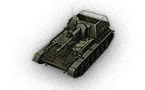
Penetration (mm)
EU  AP 116 /
AP 116 /  APCR 162 /
APCR 162 /  HE 38 → RU
HE 38 → RU  AP 112 /
AP 112 /  APCR 189 /
APCR 189 /  HE 29
HE 29
Damage (HP)
EU  AP 110 /
AP 110 /  APCR 110 /
APCR 110 /  HE 156 → RU
HE 156 → RU  AP 85 /
AP 85 /  APCR 85 /
APCR 85 /  HE 95
HE 95
Firepower
DPM (HP/min) EU 1 678.98 RU 1 773.10
Module damage EU 105 RU 76
Rate of fire (rounds/min) EU 15.26 RU 20.86
Reload time (s) EU 3.93 RU 2.88
Caliber EU 76 RU 57
Shell velocity (m/s) EU 880 RU 990
Ammo capacity EU 95 RU 110
Potential damage EU 10 450 RU 9 350
Gun handling
Aim time (s) EU 1.92 RU 1.63
Dispersion (m/100 m) EU 0.35 RU 0.33
Dispersion · damaged EU 0.69 RU 0.65
Dispersion · firing EU 3.50 RU 2
Mobility
Forward speed on soft terrain (km/h) EU 33.55 RU 31.33
Reverse speed (km/h) EU 14 RU 12
Engine power (hp) EU 200 RU 179.74
Weight (kg) EU 10 803 → RU 10 398
Power/weight (hp/t) EU 18.51 RU 17.29
Tank traverse (°/s) EU 54.24 RU 43.81
Tank traverse on hard terrain (°/s) EU 55.10 RU 48.35
Tank traverse on medium terrain (°/s) EU 50.51 RU 44.32
Tank traverse on soft terrain (°/s) EU 28.86 RU 25.32
Armor & health
Health EU 410 RU 550
Health · engine EU 135 RU 70
Health · track EU 95 RU 80
Track repair time (s) EU 11.82 RU 5
Miscellaneous
Stationary camo · after firing EU 5.56 RU 6.30
Moving camo · after firing EU 3.34 RU 3.78
SU-85B · Tier IV
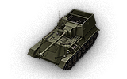
Gun handling
Aim time (s) EU 2.21 RU 1.92
Dispersion (m/100 m) EU 0.40 RU 0.36
Dispersion · damaged EU 0.81 RU 0.73
Armor & health
Health EU 380 RU 560
Track repair time (s) EU 10.03 RU 5
T-28 · Tier IV
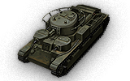
Gun handling
Aim time (s) EU 2.21 RU 1.73
Dispersion · moving EU 0.23 RU 0.20
Dispersion · tank traverse EU 0.23 RU 0.20
Mobility
Engine power (hp) EU 540 RU 528.64
Power/weight (hp/t) EU 31.62 RU 30.95
Tank traverse (°/s) EU 55.28 RU 41.72
Tank traverse on hard terrain (°/s) EU 57.12 RU 43.70
Tank traverse on medium terrain (°/s) EU 48.33 RU 36.97
Tank traverse on soft terrain (°/s) EU 29.92 RU 22.89
Armor & health
Health EU 570 RU 630
Track repair time (s) EU 10.03 RU 5
T-28E with F-30 · Tier IV
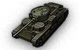
Mobility
Forward speed on soft terrain (km/h) EU 22.24 RU 21.77
Engine power (hp) EU 540 RU 528.64
Power/weight (hp/t) EU 16.36 RU 16.02
Armor & health
Health EU 580 RU 620
Track repair time (s) EU 10.03 RU 5
T-34 with L-11 · Tier IV
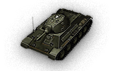
Firepower
DPM (HP/min) EU 983.40 RU 1 229.25
Rate of fire (rounds/min) EU 8.94 RU 11.18
Reload time (s) EU 6.71 RU 5.37
Gun handling
Aim time (s) EU 2.90 RU 1.80
Dispersion (m/100 m) EU 0.51 RU 0.42
Dispersion · damaged EU 1.02 RU 0.84
Dispersion · moving EU 0.29 RU 0.20
Dispersion · tank traverse EU 0.29 RU 0.20
Dispersion · turret traverse EU 0.16 RU 0.12
Dispersion · firing EU 4 RU 2
Armor & health
Health EU 560 RU 620
Track repair time (s) EU 12.03 RU 5
T-80 · Tier IV
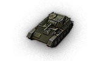
Firepower
DPM (HP/min) EU 2 168.67 RU 2 454.55
Rate of fire (rounds/min) EU 54.22 RU 61.36
Clip size EU 5 RU 6
Clip damage · damage EU 200 RU 240
Clip damage · time (s) EU 1.33 RU 1.67
Gun handling
Dispersion (m/100 m) EU 0.43 RU 0.40
Dispersion · damaged EU 0.86 RU 0.81
Dispersion · moving EU 0.24 RU 0.20
Dispersion · tank traverse EU 0.24 RU 0.20
Dispersion · firing EU 2 RU 1.50
Armor & health
Health EU 540 RU 510
Track repair time (s) EU 8.02 RU 5
Valentine II · Tier IV
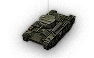
Firepower
DPM (HP/min) EU 1 286.80 RU 1 470.63
Rate of fire (rounds/min) EU 27.38 RU 31.29
Reload time (s) EU 2.19 RU 1.92
Gun handling
Aim time (s) EU 1.71 RU 1.70
Dispersion (m/100 m) EU 0.41 RU 0.37
Dispersion · damaged EU 0.82 RU 0.74
Dispersion · turret traverse EU 0.08 RU 0.10
Dispersion · firing EU 3 RU 2
Armor & health
Track repair time (s) EU 10.03 RU 5